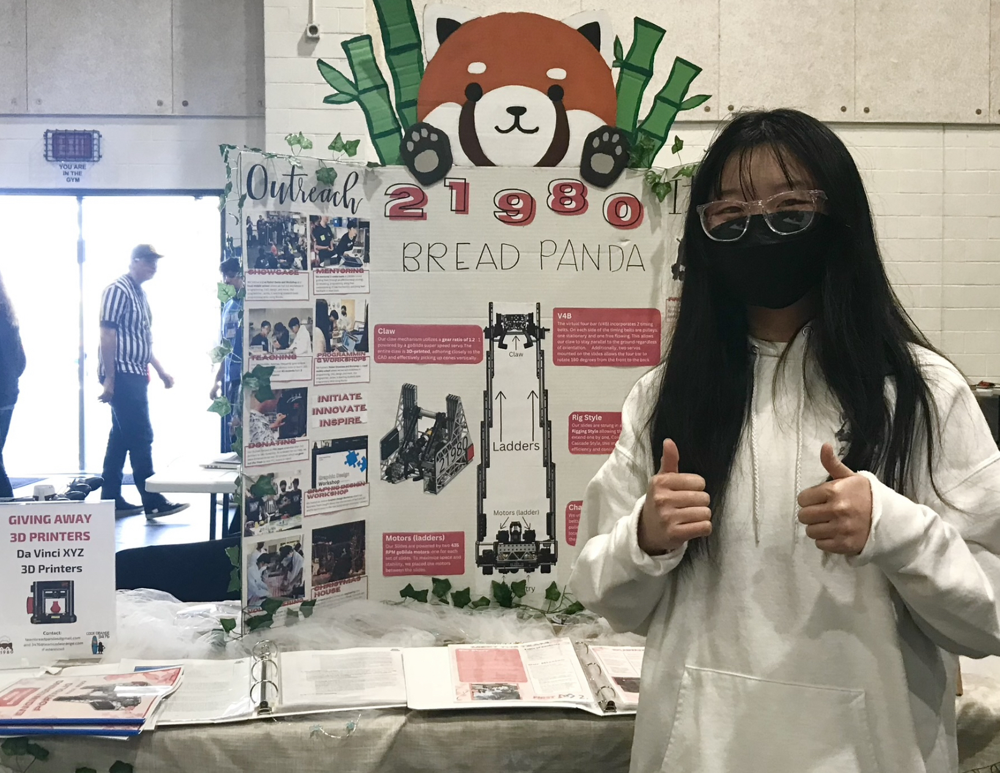
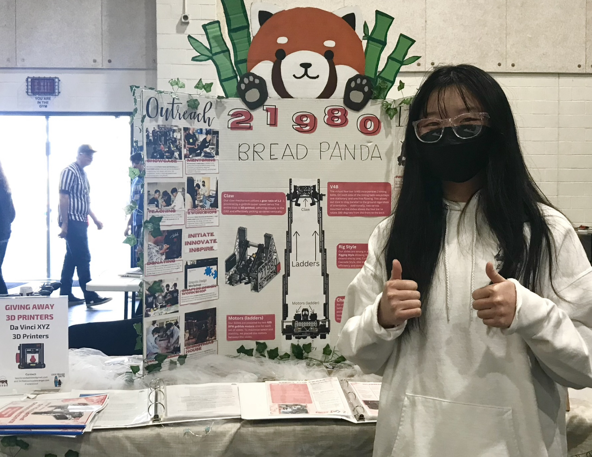
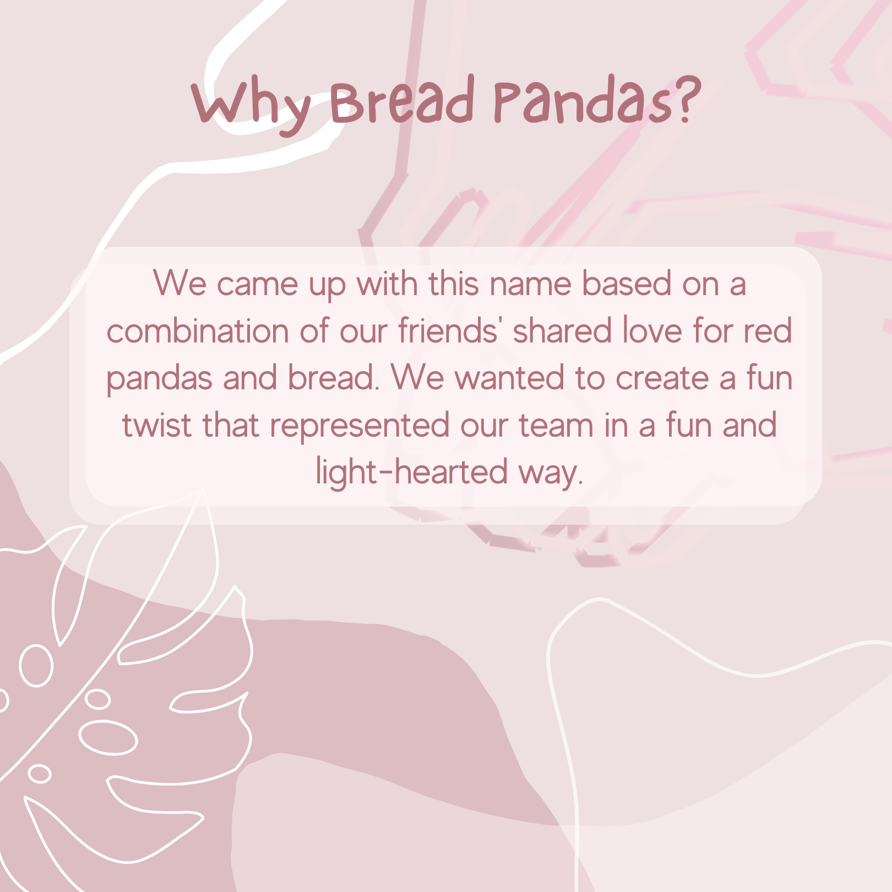
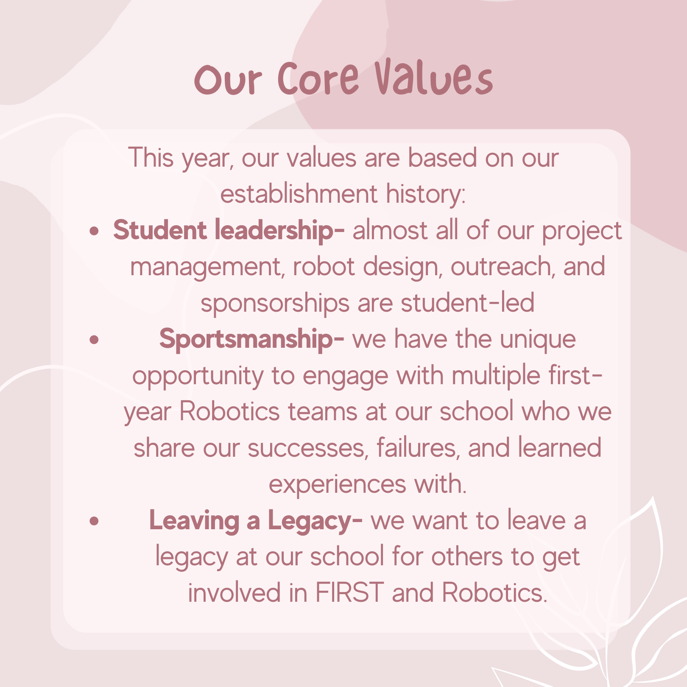
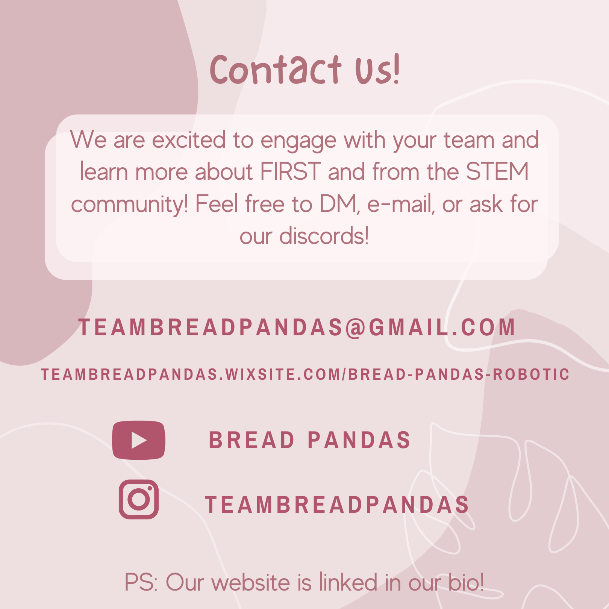
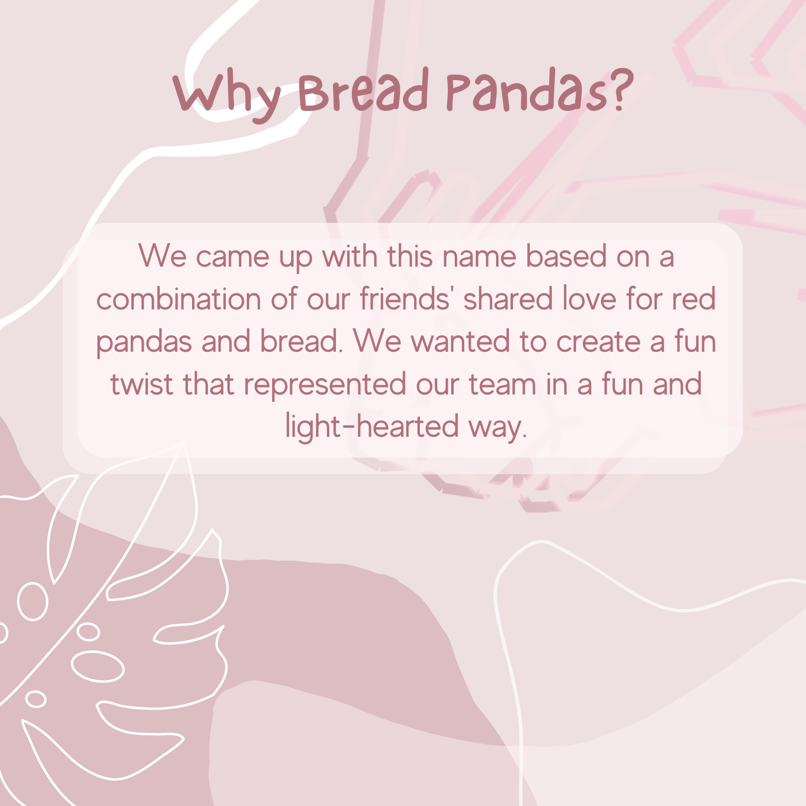
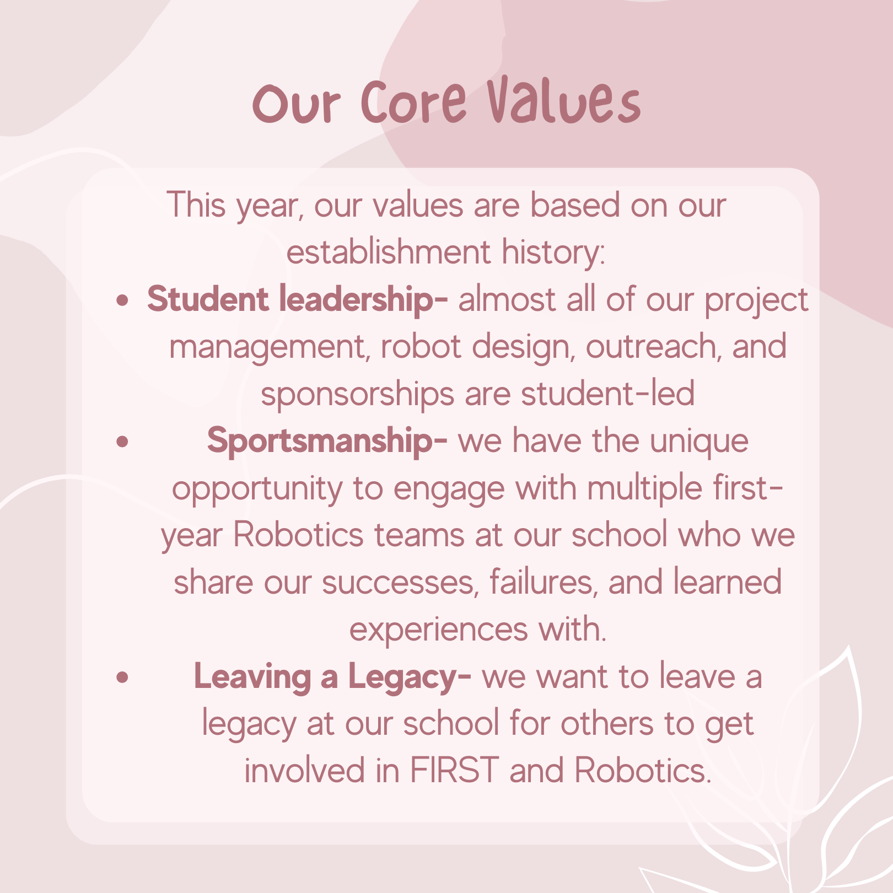
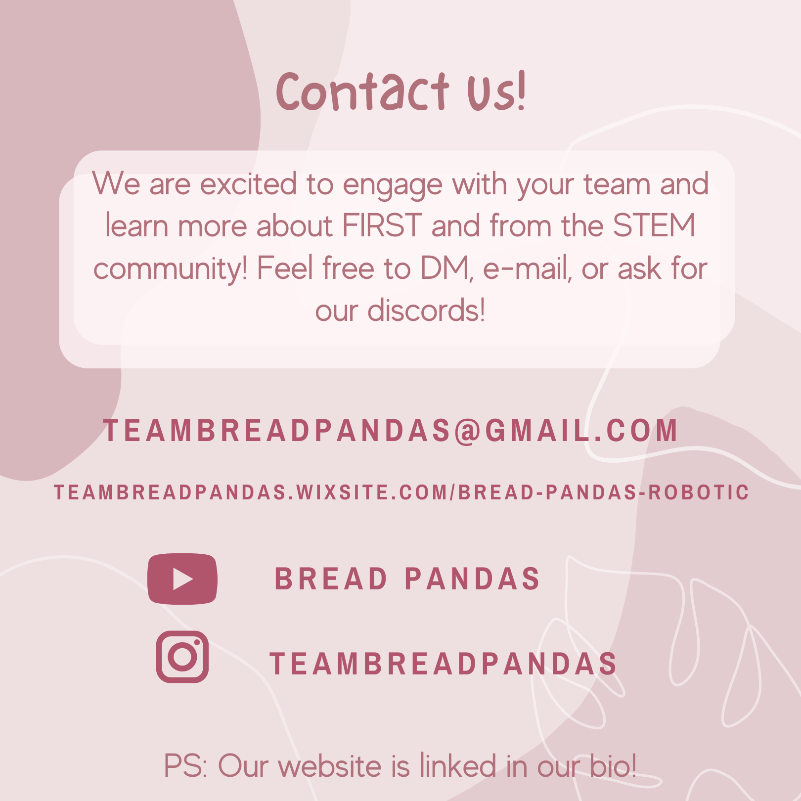
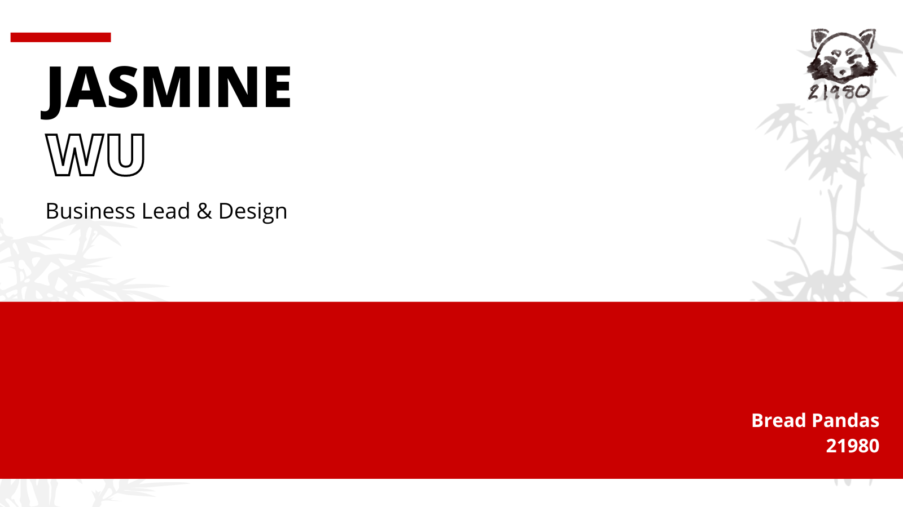
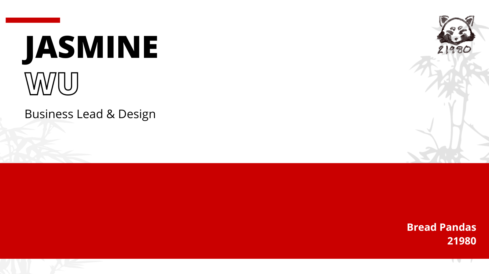

Role
Business Lead
Designer
Outreach Coordinator
Duration
2 years,
(Junior - Senior yr of HS)
Skills
Workshop Coordination
Merch Design
Business Operations
During my Junior Year (just back from COVID Lockdown), I decided to try something
new and join a Robotics Team (Fun Fact: I had zero engineering nor programming experience
prior to this!)
As the Business Lead, I participated in the FIRST Tech Challenge
Robotics Competitions, compiled a 150 page
business plan/Notebook, and developed our team merchandise from scratch.
After these two years, I'm happy to say that we've won multiple awards including 1st place in Design and Promotion,
even being the first team at our high school to advance to States!
Heads-Up: This page combines projects from both the first season (Team 20191) and the second (Team 21980).
Review the contents below!
After my first year of Robotics, our high school's program was suddenly canceled due to a lack of funding. I led pitches to our school administrators to convince them to revive the program, but to no avail. Finally, I decided to take the lead in establishing an independent community team, which became 21980 Bread Pandas
Along with being the first team at our high school to advance to State Championships, we also won 1st place Deisgn (two times!), the Promote Award, 2nd Place Inspire, 2nd Place Promote, and more!
Leadership
As the Head of Business, I lead all of our
outreach events. I communicated with 8 HS/University Organizations and 12 speakers
from top industries like like Riot Games, Roblox, and Mojang Studios to speak at 9 online webinars
about their careers in product design, Machine Learning, and SWE. I also designed and led the
Graphic Design Workshop!
I developed the speaking agendas,
slideshow presentations, and IG posts to promote the event (featured below).


✧
✧
I lead the branding and design for all the instagram post designs including outreach events. communicate with the co-hosts. I aimed for a simple blue and white color palette with complex graphics to balance the simplicity. I organized each composition with images in the foreground and backgrond, enhancing the visual depth.


Fashion Design
I lead the designs for the team hoodies and t-shirts for both our first and second season.
Season 1
To ensure that our team spirit and brand were communicated through this uniform, I went with a
geometric, "e-sports" style design that combined the "Bread" and "Panda" with a bright, eye-catching color palette.
Fun Fact: I designed the entire gaphic using a trackpad on my school-issued chromebook!
Season 2
This season, I went with a flexible and neutral palette reminiscent of traditional Japanese Ink Art.
While not as flashy as the former, the monochrome color palette and minimalist design made for a versitile design: for competitions and daily wear.
Scroll for iteratons! :D
✧
✧
Season 1: My previous iterations featured monochrome color palettes, however I quickly realized that, though attractive, it didn't have the eye-catching "pull-factor" that the vibrant, contrasting design of the original had, which is what we ultimately chose through conducting a team poll. As a first-year team, this confident and daring color scheme also fit our branding a lot better!


The Final Product Below (feat. me!)


Season 2: I had two iterations: one fully white and one greyscale. I decided to choose the latter because it was more reminiscent of traditional ink-art. I designed the logo in a loose and organic style, paralleling natural elements of nature consistent with our brand.


UI Design
I lead the website development for both seasons. This season, I initially went with a red theme (before we had established our blue-centric branding)
largely because it was a minimal yet bold and confident color palette.
I organized the Information Hierarchy based on mission and purpose, the ultimate goal being to click the "fundraiser" button, which is also
the main "CTA" button featured in the nav bar and landing page. Under the philosophy of the serial positioning effect, the contact form and
other target links were placed at the top and bottom of the page.
I integrated dynamic yet subtle geometric graphics in the background with micro-animations. Simple and intuitive. Versatile yet bold.


▿ Click Play to see a full run-through of the website! ▿
.JPG)
Management
I headed the design and execution of our booth (similar to a trade show booth but for robots)
including the coordination of materials with administrators, communication of the design vision,
and the design of all promotional materials used in the booth.
With a limited budget and location confinements, I wrote around 16 bills in coordination with
the Robotics Club at our High School.
✧
✧
Stage 1: Ideation and Brainsorming
The initial concept design combined the natural elements of a Panda's habitat (hanging leaves, forest canopy, and "hut" canopy)
with futuristic elements (LED Neon display).
Stage 2: Coordination and Conceptualization
The Digital Mockup offered a more technical and strategic overview of the design. This was also when I began
communicating with our mentor about the plan to secure, collect, and divide funds.
Stage 3: Execution
After designing the banners, posters, and engineering portfolio, I set up the budget
outline and collected/purchased the components.


Overcoming Challenges: On the day of the competition, we were unexpectedly met with tight restrictions on our pit booth and were unable to put up our canopy, a key component of our design. Nevertheless, we powered through and improvised our design: taping our banner to a stack of cardboard boxes and ultimately, receiving many compliments for our design!
▿ The Development Process! ▿


✧
✧


△ Season 2 Ideations Sketches Above!
For the second season, we decided to go with a trifold design instead of posters. I laid out rough sketches with a strategic visual hierarchy
that would emphasize the robot design (in the middle) while still adding personality with the panda graphic.
Since the 3 major award categories were the robot design, design process, and outreach, I organized those categories based on highest
importance (robot design ranked the highest) for an intuitive user experience.
The final design (thanks to Minh-Tu from our business team for painting the panda!) featured a vibrant pink that matched our portfolio branding and an eye-catching
panda design on top.
 

▿ The physical assets I designed for the competitions ▿


Graphics
I also worked on a variety of other designs such as banners for our
various social media pages, zoom backgrounds for our digital outreach
events, engineering notebook + portfolio and instagram posts!
This also marked the first time I designed a website which you can check out
here. Though
the design is not the most clean or visually appealing, it gave me my first taste of web development!

 






▿ Banner designs for Season 2 (this year) ▿
.png) 

Reflection
On the surface, this saying seems counter-intuitive. Why would you agree to something without having a plan?
Well, the reason I started Robotics was because I was suddenly introduced to it by my AP Comp Sci teacher
who unexpectedly asked me if I wanted to join the High School Robotics team, though I had no experience.
Because of that spontaneous decision , I have attended my first competition in high school, learned invaluable
management skills, and made lasting memories with amazingly talented people who I wouldn't have met otherwise.
Here are some other lessons:
▿ Us at Regionals '23; So proud! ▿